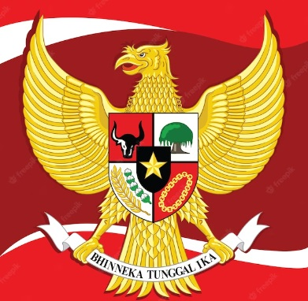

Di mana banyak menjadi satu: Semangat Bhinneka Tungal Ika di Indonesia
Penulis: Prince Carlton Kristian
Tanggal: October 21, 2025
 Indonesia, negara yang penuh dengan tradisi yang indah, banyak agama, seperti Katholik, Kristen, Muslim, Konghucu, Buddha, dan Hindu. Indonesia juga memiliki budaya yang sangat kaya, Dengan lebih dari 1.300 suku bangsa dan enam agama resmi, Indonesia menjadi contoh bangsa yang berbeda namun tetap bersatu. Keanekaragaman ini tidak hanya menjadi kekuatan nasional, tetapi juga ditunjukan dari semboyan “Bhinneka Tunggal Ika”, yang berarti berbeda-beda tetapi tetap satu. Namun, di tengah kemajuan, terdapat tantangan berupa konflik sosial dan menurunnya nilai toleransi.Banyak hasil penelitian yang menunjukkan bahwa warga Indonesia pandai menjaga kerukunan. Mereka melakukan itu melalui sikap saling menghargai dan hormati beda-beda. Bhinneka Tunggal Ika menjadi pegangan utama. Semboyan ini berarti bersatu dalam keragaman. Dalam rutinitas harian, nilai ini terlihat jelas. Misalnya, gotong royong saat membangun jembatan desa. Semua tetangga ikut membantu tanpa pikir suku atau keyakinan. Kerja bakti juga ramai diadakan. Warga membersihkan lingkungan bersama. Perayaan hari besar ikut memperkuat ikatan. Seperti Idul Fitri atau Natal. Berbagai kelompok hadir. Mereka rayakan tanpa membedakan agama. Di Bali, Nyepi melibatkan semua warga. Mereka diam sehari untuk introspeksi. Di Jawa, tradisi sedekah bumi hidupi gotong royong. Petani berbagi hasil panen. Ritual ini menghubungkan orang dengan alam dan sesama. Ngaben di Bali bakar jenazah dengan upacara meriah. Ia menyatukan keluarga dan komunitas. Upacara adat Toraja di Sulawesi juga demikian. Mereka kubur jenazah lama setelah pesta besar. Acara ini perkuat rasa kebersamaan antarwarga. Semua tradisi ini jaga hubungan sosial tetap erat.
Pendidikan memiliki peran besar dalam mengajari toleransi sejak kecil. Pelajaran Pancasila tanamkan lima sila dasar. Sila itu ajar menghormati Tuhan, kemanusiaan, persatuan, demokrasi, dan keadilan. Sejarah sekolah ceritakan perjuangan bangsa. Siswa belajar dari masa lalu soal keragaman. Kegiatan sekolah seperti pramuka atau olahraga tim bangun rasa kebersamaan. Anak-anak belajar kerja sama tanpa batas suku. Tetapi penelitian temukan tantangan nyata. Banyak orang kurang paham berbeda budaya atau agama. Media sosial tambah rumit. Berita palsu cepat menyebar. Ia memicu salah paham antar kelompok. Misalnya, isu sensitif tentang keyakinan viral di TikTok atau Instagram. Hal ini bisa menimbulkan konflik kecil. Keluarga harus mengajari nilai dasar di rumah. Menceritakan kisah toleransi sehari-hari. Sekolah perlu menambah program dialog antar siswa beda latar. Pemerintah dapat mendukung lewat kampanye nasional. Seperti acara Hari Kesaktian Pancasila. Semua pihak berkerja sama. Mereka menumbuhkan semangat bersatu di tengah beragamnya Indonesia. Langkah ini mencegah gesekan dan jaga damai abadi.
Keanekaragaman agama, budaya, adat, dan tradisi menjadi kekayaan besar bagi bangsa kita. Indonesia memiliki ribuan pulau dengan ratusan suku bangsa, seperti Jawa, Sunda, Batak, dan Dayak. Setiap kelompok membawa cerita, ritual, dan keyakinan sendiri. Ini semua merupakan bentuk aset berharga yang membuat negara kita unik di mata dunia. Semangat Bhinneka Tunggal Ika yang artinya berbeda-beda tetapi satu. Semboyan ini ajak semua orang sadar bahwa perbedaan justru kuatkan ikatan. Berkat semangat itu, warga dapat tinggal berdampingan dengan tenang. Bayangkan saja, di pasar tradisional Bali, orang Hindu bercampur dengan pedagang Muslim jualan bareng tanpa ribut. Atau di kampung Jawa, gotong royong membantu tetangga beda agama bangun rumah. Meski latar belakang berbeda, seperti asal daerah atau keyakinan, damai tetap terjaga. Penelitian ini tunjukkan bukti nyata. Toleransi berarti menerima perbedaan tanpa paksaan. Gotong royong artinya saling membantu demi kepentingan bersama, seperti semboyan Pancasila. Rasa saling menghormati membuat orang menghargai batas satu sama lain. Nilai-nilai ini menjadi pondasi kokoh untuk menyatukan bangsa. Tanpa mereka, perpecahan mudah muncul. Maka dari itu, semua warga harus rajin menanamkan nilai itu sehari-hari. Mengajari ke anak cucu melalui cerita atau kegiatan bersama. Dengan begitu, persatuan bangsa tetap utuh. Keharmonisan antar warga juga akan bertahan lama.